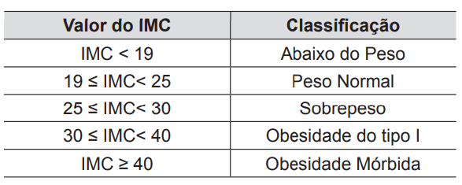

IMC e ALIMENTAÇÃO CORRETA

A saúde começa com uma alimentação saudável, pois o que consumimos tem um impacto direto no nosso bem-estar físico e mental. Uma dieta equilibrada, rica em nutrientes essenciais, fortalece o sistema imunológico, previne doenças crônicas e promove um melhor funcionamento do organismo. Alimentos frescos e naturais, como frutas, vegetais, grãos integrais e proteínas magras, são fundamentais para manter o corpo nutrido e energizado. Além disso, hábitos alimentares saudáveis favorecem a digestão, a saúde cardiovascular e o equilíbrio hormonal. Investir em uma alimentação saudável é o primeiro passo para uma vida longa e plena. A partir disso, confira agora 5 dicas alimentares para se manter saudável e em boa forma.
A SEGUIR 5 DICAS ALIMENTARES:
1. Inclua alimentos frescos e naturais: Priorize frutas, vegetais, legumes e grãos integrais em suas refeições diárias, pois são ricos em nutrientes e ajudam a manter o corpo saudável.
2. Hidrate-se adequadamente: A água é essencial para o bom funcionamento do organismo. Beber de 2 a 3 litros de água por dia ajuda a manter a pele saudável, favorece a digestão e melhora a energia.
3. Controle o consumo de açúcar e alimentos processados: Evite alimentos com alto teor de açúcar refinado, como refrigerantes e doces, e opte por opções naturais e menos processadas, para evitar doenças crônicas.
4. Prefira gorduras saudáveis: Consuma fontes de gorduras boas, como abacate, azeite de oliva e nozes, que ajudam a melhorar o colesterol e reduzem a inflamação no corpo.
5. Mastigue bem e coma devagar: Comer devagar e mastigar bem os alimentos melhora a digestão, reduz a ingestão de calorias e aumenta a sensação de saciedade.
ATIVIDADES FÍSICAS:
Além da alimentação saudável, precisamos nos atentar as atividades físicas, que são essenciais para a saúde e a boa forma. A prática regular de exercícios físicos é essencial para manter a saúde do corpo e da mente. Ela contribui para o fortalecimento do sistema cardiovascular, o aumento da flexibilidade e a melhoria da resistência física. Além disso, os exercícios ajudam a controlar o peso, prevenindo doenças como diabetes e hipertensão. A atividade física também promove a liberação de endorfinas, melhorando o humor e reduzindo os níveis de estresse. Incorporá-la na rotina diária é fundamental para uma vida longa e saudável. Confira agora 5 dicas de atividades físicas para manter a boa forma.
A SEGUIR DICAS DE 5 ATIVIDADES FÍSICAS:
1. Caminhada: Uma das atividades mais simples e eficazes, a caminhada melhora a saúde cardiovascular, fortalece as pernas e é de baixo impacto, sendo ideal para iniciantes e pessoas de todas as idades.
2. Ciclismo: Pedalar é uma ótima forma de exercício aeróbico que trabalha os músculos das pernas, melhora a resistência cardiovascular e é uma atividade de baixo impacto nas articulações.
3. Natação: A natação é uma atividade completa que trabalha todo o corpo, melhora a flexibilidade, resistência e força muscular, além de ser uma excelente opção para quem busca baixo impacto nas articulações.
4. Yoga: Além de promover flexibilidade, a yoga é excelente para o fortalecimento muscular, equilíbrio e redução do estresse, ajudando na saúde mental e no bem-estar geral.
5. Treinamento de força (musculação): Levantar pesos ajuda a aumentar a massa muscular, melhorar a densidade óssea e acelerar o metabolismo. É fundamental para prevenir a perda de massa muscular com o envelhecimento e melhorar a postura.
HÁBITOS SAUDÁVEIS:
Adotar hábitos saudáveis é essencial para garantir uma vida longa e com qualidade. Esses hábitos incluem uma alimentação equilibrada, a prática regular de exercícios físicos e a manutenção de uma boa saúde mental. Além disso, dormir bem, gerenciar o estresse e evitar comportamentos prejudiciais, como o tabagismo, são fundamentais para preservar o corpo e a mente. A integração dessas práticas no dia a dia pode prevenir doenças crônicas, melhorar a disposição e proporcionar mais vitalidade. Cada escolha saudável reflete diretamente no bem-estar, trazendo benefícios a curto, médio e longo prazo. Por isso, investir em hábitos saudáveis é investir em uma vida plena e feliz. Confira agora 5 hábitos saudáveis que acentuam a sua saúde.
5 HÁBITOS SAUDÁVEIS:
1. Pratique exercícios físicos regularmente: A atividade física ajuda a manter o corpo em forma, melhora a saúde cardiovascular, combate o estresse e aumenta a produção de endorfinas.
2. Durma o suficiente: Dormir de 7 a 9 horas por noite é fundamental para a recuperação do corpo, melhora a memória, o humor e o sistema imunológico.
3. Gerencie o estresse: Técnicas de relaxamento como meditação, ioga ou simplesmente dar um tempo para si mesmo podem ajudar a reduzir os níveis de estresse e melhorar o bem-estar mental.
4. Evite o tabagismo e o consumo excessivo de álcool: O tabaco e o álcool em excesso são prejudiciais à saúde e podem causar várias doenças, como câncer e problemas hepáticos. Evitar ou reduzir esses hábitos traz benefícios a longo prazo.
5. Mantenha uma rotina de autocuidado: Reserve tempo para atividades que promovam o bem-estar, como hobbies, passeios ao ar livre ou cuidados com a saúde mental, o que contribui para uma vida equilibrada e feliz.
ÍNDICE DE MASSA CORPORAL
O QUE SERIA IMC?
O Índice de Massa Corporal (IMC) é uma medida usada para avaliar se uma pessoa está com peso adequado em relação à sua altura. Ele é calculado dividindo o peso (em kg) pelo quadrado da altura (em metros). O IMC é classificado em categorias, como peso abaixo do ideal, normal, sobrepeso e obesidade, ajudando a identificar riscos para a saúde. Embora útil, ele não considera fatores como composição corporal e distribuição de gordura. Por isso, deve ser complementado por outras avaliações para um diagnóstico mais preciso. O resultado do cálculo é classificado em categorias que ajudam a identificar possíveis riscos à saúde. A tabela padrão de interpretação do IMC, definida pela Organização Mundial da Saúde (OMS), é a seguinte:

Importante mencionar que: Embora o IMC seja um indicador prático, ele não considera aspectos como a composição corporal (quantidade de gordura e massa muscular) ou a distribuição da gordura. Portanto, é recomendável utilizá-lo como uma referência inicial e complementar sua avaliação com exames mais detalhados, como bioimpedância ou avaliação médica. Vamos calcular o seu?
Digite seu peso e sua altura respectivamente:
Resultado:
Depois de calcular, lembre-se: o índice é apenas uma estimativa e pode variar conforme sua composição corporal, idade e outros fatores. Para um diagnóstico mais preciso sobre sua saúde, consulte um profissional de saúde, como um médico ou nutricionista. Cuidar da alimentação e manter uma rotina de exercícios físicos são passos importantes para uma vida saudável.